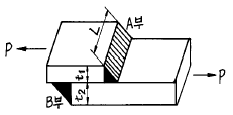
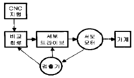
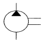
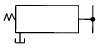
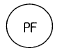
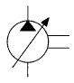
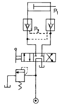
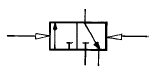
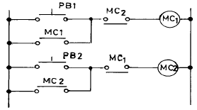

생산자동화산업기사 (2004-09-05 기출문제)
1과목: 기계가공법 및 안전관리
1. 목형의 종류중 대형이고 제작 수량이 적은 주물에서 재료와 공사비를 절약하기 위해 골격만 목재로 만드는 것은?
- 코어 목형(core pattern)
- 부분 목형(section pattern)
- 긁기 목형(strickle pattern)
- 골격 목형(skeleton pattern)
(정답률: 57%)

2. 브라운 샤프형 분할판을 사용하여 원주를 35등분하려고 할 때, 적당한 구멍열은?
- 19
- 20
- 21
- 27
(정답률: 34%)
3. 드릴지그의 분류에서 상자형 지그(box jig)에 포함되지 않는 것은?
- 개방형(Open type)
- 밀폐형(Closed type)
- 평판형(Plate type)
- 조립형(Built up type)
(정답률: 48%)
4. 1/20㎜의 버니어 캘리퍼스를 설명한 것 중 맞는 것은?
- 본척의 눈금이 0.5㎜, 부척의 눈금은 19㎜를 20등분한 것.
- 본척의 눈금이 1㎜, 부척의 눈금은 19㎜를 20등분한 것.
- 본척의 눈금이 0.5㎜, 부척의 눈금은 19㎜를 25등분한 것.
- 본척의 눈금이 1㎜, 부척의 눈금은 19㎜를 25등분한 것.
(정답률: 50%)
5. 인발 작업에서 지름 5.5mm의 와이어를 ø 4mm로 가공하려고 한다. 이때의 단면 수축율 및 가공도는 얼마인가?
- 약 47%, 약 53%
- 약 47%, 약 55%
- 약 53%, 약 47%
- 약 55%, 약 47%
(정답률: 35%)
6. 소성가공에는 상온가공과 고온가공이 있다. 고온가공을 제일 적합하게 설명한 것은 ?
- 고온에서 가공하는 방법
- 재결정 온도 이상에서 가공하는 것
- 가열하면서 가공하는 것
- 변태점 이하의 낮은 온도에서 가공하는 방법
(정답률: 56%)
7. 플레이너(Planer)의 급속귀환 운동에 부적당한 기구는?
- 유압 기구
- 크랭크 장치
- 랙과 피니언
- 웜과 웜기어
(정답률: 29%)
8. 펀치나 다이에 시어각(Shear angle)을 주는 까닭은 무엇인가?
- 펀치나 다이를 보호하기 위해서
- 전단면을 아름답게 하기 위하여
- 전단하중을 줄이기 위하여
- 다이에 대해 펀치의 편심을 방지하기 위해
(정답률: 27%)
9. 방전 가공기의 형식이 아닌 것은?
- 콘덴서형
- 실리콘형
- 크리스탈형
- 다이오드형
(정답률: 44%)
10. 맨네스맨(Mannesmann)식 제관법(製管法)에 해당되는 것은?
- 단접관법
- 용접관법
- 천공법(piercing process)
- 오무리기법(cupping process)
(정답률: 42%)
11. 워엄기어(worm gear)의 가공방법이 아닌 것은?
- 호브(hob)를 반경방향으로 이송하는 방법
- 테이퍼호브(taper hob)를 접선(接線)이송하는 방법
- 호빙머시인에서 플라이커터(fly cutter)에 의한 가공방법
- 랙커터(rack cutter)에 의한 가공방법
(정답률: 11%)
12. 직류 아크 용접시 모재를 양극(+), 용접봉을 음극(-)으로 한 전원의 극성은?
- 정극성
- 역극성
- 혼합극성
- 수하특성
(정답률: 77%)
13. 목형의 종류중 현형의 종류가 아닌 것은?
- 단체 목형
- 분할 목형
- 부분 목형
- 조립 목형
(정답률: 25%)
14. 초음파 용접에 관한 설명 중 틀린 것은?
- 접촉면 사이의 원자간의 인력(引力)이 작용하여 용접이 된다.
- 용접가능한 판두께가 매우 얇다.
- 가압력이 필요없다.
- 서로 다른 금속간의 용접에 극히 유용하다.
(정답률: 48%)
15. 표면경화와 피로강도 상승의 효과가 함께 있는 가공법은?
- 숏피닝
- 래핑
- 샌드블라스팅
- 호빙
(정답률: 53%)
16. 소성가공이 아닌 것은?
- 인발(drawing)
- 단조(forging)
- 나사전조(thread rolling)
- 브로칭(broaching)
(정답률: 60%)
17. 내경 측정에 사용되는 측정기가 아닌 것은?
- 내측 마이크로미터
- 실린더 게이지
- 버니어 캘리퍼스
- 옵티컬 플랫
(정답률: 50%)
18. 강의 표면 경화법에서 시안화법(cyaniding)은?
- 화염경화법(火炎硬化法)
- 고주파 경화법(高周波硬化法)
- 질화법(窒化法)
- 청화법(靑化法)
(정답률: 42%)
19. 방전가공(electric discharge machining)에 관한 설명 중 틀린 것은?
- 절삭가공이 어려운 높은경도의 재료도 비교적 쉽게 가공할 수 있다.
- 열의 영향을 받으므로 가공변질층이 넓은 단점이 있다.
- 내마모성이 높은 표면을 얻을 수 있다.
- 내부식성이 높은 표면을 얻을 수 있다.
(정답률: 47%)
20. 드릴에서 디닝(thinning)을 옳게 설명한 것은?
- 드릴의 장시간 사용으로 웨브가 얇아지는 것이다.
- 마진의 폭을 좁히는 것이다.
- 백 테이퍼를 증가시키는 것이다.
- 절삭저항을 감소시키기 위하여 웨브(web)두께를 얇게 연삭하는 것이다.
(정답률: 43%)
2과목: 기계제도 및 기초공학
21. 지름 100㎜인 원동 마찰차의 회전수를 1/4로 감소시키는 데 사용할 종동 마찰차의 지름은 얼마인가?
- 400㎜
- 300㎜
- 250㎜
- 25㎜
(정답률: 56%)
22. 서로 미끄럼 접촉을 하는 한쌍의 기소(element) 중에 곡선 윤곽을 갖는 구동체를 무엇이라 하는가?
- 종동절(follower)
- 나이프 에지(knife-edge)
- 롤러(roller)
- 캠(cam)
(정답률: 15%)
23. CNC 공작기계의 관리 방법이 아닌 것은?
- 점검표를 작성 보존한다.
- 일상 점검은 수시로 한다.
- 전원 공급시 기계의 안전상태를 파악한다.
- 작업 중 기계가 이상이 생기면 작업이 끝난 후 정지 시킨다.
(정답률: 59%)
24. 여러 대의 공작기계를 컴퓨터 1대로 제어하는 방식으로 CNC 공작기계의 작업성 및 생산성을 향상시키는 동시에 이것을 NC공작기계 군으로 시스템화하여 그 운용을 제어 및 관리하는 시스템은?
- NC
- CNC
- DNC
- FMS
(정답률: 48%)
25. 다음 그림과 같은 겹치기 필렛용접이음에서 허용응력을 9㎏f/㎜2, 강판의 두께 t1 =10㎜, t2 = 15㎜일 때 용접부의 유효길이 L은 몇 ㎜가 적당한가? (단, 용접부 A, B부의 응력은 같고, 인장하중 P = 5000㎏f이다.)

- 26.1
- 31.4
- 36.8
- 41.3
(정답률: 43%)
26. 다음 중 CAD시스템의 도입효과가 아닌 것은?
- 생산성 향상과 원가 절감
- 비밀 보호
- 설계 품질의 향상
- 설계시간의 단축
(정답률: 43%)
27. 다음중 2축이 직각인 경우가 많고, 큰 감속비를 얻고자 하는 경우에 가장 많이 쓰이는 기어는?
- 하이포이드기어
- 웜기어
- 스퍼어 기어
- 베벨기어
(정답률: 34%)
28. 잇수가 각각 150 과 50 이고, 치직각 모듈 m = 6인 헬리컬 기어에 있어서 중심거리는 몇 ㎜가 되는가? (단, 비틀림각 β = 30° 로 한다.)
- 593
- 693
- 793
- 893
(정답률: 35%)
29. 프로그램에서 지령된 시간동안 프로그램 진행을 잠시 중지 시키는 지령의 기능은?
- 휴지(G04)
- 원호보간(G02)
- 공구기능(T기능)
- 보조기능(M기능)
(정답률: 54%)
30. 방정식 ax+by+c=0 라는 식으로 표현 가능한 항목은?
- Bezier curve
- spline curve
- polygonal line
- circle
(정답률: 18%)
31. CPU와 메인메모리(RAM)사이에 위치하여 CPU와 메인메모리 사이에서 처리될 자료를 효율적으로 이송할 수 있도록 하여 자료처리 속도를 증가시키는 것은?
- coprocessor
- cache memory
- ROM
- BIOS
(정답률: 42%)
32. 레디얼 볼 베어링 #6311의 안지름은 얼마인가?
- 55㎜
- 63㎜
- 11㎜
- 12㎜
(정답률: 31%)
33. G기능 중에서 공구경 보정과 관련된 기능만을 옳게 묶어 놓은 것은?
- G41, G42, G43
- G40, G41, G42
- G43, G44, G45
- G40, G43, G44
(정답률: 54%)
34. 다음에서 CNC공작 기계의 특징이 아닌 것은?
- 공구비가 적게 든다.
- 생산 자동화 라인을 쉽게 구축할 수 있다.
- 생산제품을 균일화시킬 수 있다.
- 작업자의 피로도를 증가시킨다.
(정답률: 74%)
35. 유체의 흐름, 핵과 화학반응, 식물의 생리적현상, 하중을 받은 구조물의 동적변화 등의 과학적인 현상에 대해서 실제로 실험하지 않고 수학적 모델에 대해 화면상에서 그림의 변화 효과만으로도 연구 해석할 있는 방법을 무엇이라고 하는가?
- 애니메이션(animation)
- 시뮬레이션(simulation)
- 솔리드모델링
- 화면표시처리장치(DPU)
(정답률: 75%)
36. 유니파이나사의 나사산 각도는?
- 55°
- 60°
- 30°
- 50°
(정답률: 55%)
37. 핀이 사용 되는 곳으로 틀린 것은?
- 나사 및 너트의 풀림 방지에 사용
- 작은 핸들과 축의 고정이나 끼워 맞춤부분의 위치 결정에 사용
- 기계 부품의 연결 등 키보다 하중이 가볍게 걸리는 곳에 간단하게 체결할 때 사용
- 영구적 결합이 필요로 하는 곳에 사용
(정답률: 40%)
38. 길이 3m, 안지름 25㎜의 구리관에 내압 8㎏f/㎜2이 작용할때 파이프의 두께 t는 몇 ㎜ 정도인가? (단, 허용 인장응력 σa = 17㎏f/㎜2이고, 이음 효율 η = 85%이며, 부식여유는 무시한다.)
- t = 6.92
- t = 9.81
- t = 12.03
- t = 15.42
(정답률: 29%)
39. 직선을 정의하는 방법 중 틀린 것은?
- 임의의 2점 지정에 의한 직선 정의
- 1점을 지나는 수평선에 의한 직선 정의
- 간격지정에 의한 평행선에 의한 직선 정의
- 요소상 투영점 지정에 의한 직선 정의
(정답률: 53%)
40. 두개의 축이 평행하고, 그 축의 중심선의 위치가 약간 어긋났을 경우, 각속도는 변화없이 회전동력을 전달시키려고 할 때 사용되는 가장 적합한 커플링은?
- 플랜지 커플링(flange coupling)
- 올덤 커플링(oldham coupling)
- 플렉시블 커플링(flexible coupling)
- 유니버설 커플링(universal coupling)
(정답률: 29%)
3과목: 자동제어
41. 제 3과목: 공유압 및 자동제어 작은 지름의 파이프에서 유량을 미세하게 조정하기에 적합한 밸브는?
- 니들 밸브
- 체크 밸브
- 셔틀 밸브
- 소켓 밸브
(정답률: 36%)
42. 양정(lift) 또는 수두를 올바르게 설명한 것은?
- 압력을 비중량으로 나눈 값이다.
- 밀도를 압력으로 나눈 값이다.
- 물체의 밀도를 물의 밀도로 나눈 값이다.
- 입구 압력 당의 토크를 중력으로 나눈 값이다.
(정답률: 30%)
43. 다음 그림의 서보기구의 제어방식으로 맞는 것은?

- 개방회로 방식
- 반폐쇄회로 방식
- 폐쇄회로 방식
- 하이브리드 방식
(정답률: 47%)
44. 내경 10cm, 추력 3140 kgf, 피스톤 속도 40m/min인 유압 실린더에서 필요로 하는 유압은 최소 몇 kgf/cm2 인가?
- 40
- 60
- 80
- 160
(정답률: 48%)
45. 10t5의 라플라스 변환은?
- 1200 / S6
- 120 / S6
- 24 / S6
- 6 / S6
(정답률: 34%)
46. 사축형, 사판형과 관련이 있는 유압펌프는?
- 베인펌프
- 피스톤펌프
- 원심펌프
- 축류펌프
(정답률: 16%)
47. 2진 신호를 시간적인 차례로 조합하여 만든 신호는?
- 직렬 신호
- 병렬 신호
- 조합 신호
- 유지 신호
(정답률: 29%)
48. 10진수 0.6875를 2진수로 변환하면 얼마인가?
- (0.1011)2
- (0.0111)2
- (1.0110)2
- (0.1110)2
(정답률: 30%)
49. PLC의 구성 요소에 해당하지 않는 것은?
- 입력부
- 출력부
- 프로그램 장치
- 센서부
(정답률: 50%)
50. 제어계를 동작시키는 기준으로서 직접 제어계에 가해지는 신호는?
- 동작신호
- 기준입력신호
- 조작량
- 궤환신호
(정답률: 44%)
51. BLOCK간의 직렬 접속에 사용되는 명령어는?
- OR LOAD
- AND
- AND LOAD
- OR
(정답률: 14%)
52. 다음 중 조작력이 작용하지 않았을 때 밸브 몸체의 위치를 무엇이라 하는가?
- 중앙위치
- 초기위치
- 노멀위치
- 중간위치
(정답률: 42%)
53. 시리얼 인터페이스의 종류 중에서 FA 컴퓨터와 1:1의 통신에서 상호 거리가 15m 이내일 경우 사용되는 통신방법은?
- RS - 422
- RS - 232C
- 광 인터페이스
- RS - 485
(정답률: 37%)
54. 다음 중 정용량형 유압 펌프의 기호는?




(정답률: 67%)
55. 압축공기 조정유닛(서비스유닛)의 구성요소가 아닌 것은?
- 압축공기 필터
- 압축공기 조절기
- 압축공기 윤활기
- 압축공기 증폭기
(정답률: 43%)
56. 다음 그림의 회로 명칭은?

- 로킹회로
- 브레이크회로
- 시퀀스회로
- 단락회로
(정답률: 39%)
57. PLC 제어방식을 릴레이 제어방식과 비교할 때 PLC제어의 장점으로 볼 수 없는 것은?
- 범용성
- 장치의 확장성
- 기술적인 이해도
- 제어 내용의 가변성
(정답률: 37%)
58. 다음에 그려진 밸브의 설명으로 적당치 않은 것은?

- 정상상태 닫힘형
- 유압에 의한 작동
- 메모리형
- 3/2 way 밸브
(정답률: 28%)
59. 공기압축기의 압축원리에서 왕복식 구조는?
- 원심식
- 다이어프램식
- 스크류식
- 베인식
(정답률: 45%)
60. 제어계에서 가장 많이 이용되는 전자요소는?
- 변복조기
- 가감산기
- 증폭기
- 주파수 변환기
(정답률: 32%)
4과목: 메카트로닉스
61. 정격 검출거리 (Sn)가 5mm인 유도형 센서(직경 18ø )로 18×18×1mm 크기의 알루미늄 검출체를 검출하려고 할 때 실 검출거리는 약 몇 mm 인가? (단, 알루미늄의 감쇄상수 (Km)는 0.33이며, 상온상태의 일반적인 변동률(0.81)을 가정한다.)
- 1.3
- 2.7
- 3.5
- 4.5
(정답률: 29%)
62. 자동제어 시스템에서 제어요소는 무엇으로 구성되어 있는 가?
- 조작부와 검출부
- 조작부와 조절부
- 검출부와 조절부
- 검출부와 설정부
(정답률: 38%)
63. 다음 중 논리대수가 틀리게 표시된 것은?
- A + 0 = A
- A · 1 = A
- A + 1 = 1
- A · 0 = A
(정답률: 65%)
64. 세트입력신호에 의해 얻어진 출력신호자체에 의한 동작회로를 만든 후에 세트 입력신호를 제거해도 계속해서 동작을 계속함과 동시에 리셋 신호를 부여함으로써 복귀하는 회로를 무슨 회로인가?
- 자기유지회로
- 인터록회로
- 한시동작회로
- 시동회로
(정답률: 60%)
65. 다음 설명이 올바르게 된 것은?
- 벨트의 장력조정은 설치 후 3개월 이내에 실시하고 이후 매 6개월에 1회 정도 실시한다.
- 벨트의 장력조정은 설치 후 3개월 이내에 실시하고 이후 매 3개월에 1회 정도 실시한다.
- 벨트의 장력조정은 설치 후 6개월 이내에 실시하고 이후 매 6개월에 1회 정도 실시한다.
- 벨트의 장력조정은 설치 후 6개월 이내에 실시하고 이후 매 3개월에 1회 정도 실시한다.
(정답률: 43%)
66. 다음 중 입력 펄스수에 해당하는 만큼의 각도를 회전하는 모터는?
- AC모터
- 스텝모터
- DC모터
- 유도전동기
(정답률: 81%)
67. 그림과 같이 입력 A,B중 하나가 먼저 동작하면 다른 하나는 동작이 금지되도록 하여 기기보호나 사용자의 안전을 보호해주는 회로의 명칭은?

- 금지(inhibit) 회로
- 인터록(inter- lock)회로
- 자기유지(self- holding)회로
- 플립플롭(flip flop)회로
(정답률: 67%)
68. PLC에 사용되는 CPU의 내부 구성요소에서 ALU의 역할은?
- 데이터의 저장
- 아날로그의 영상화
- 스파크 방지 기능
- 산술이나 논리연산
(정답률: 23%)
69. 다음 중 기억회로는 무엇인가?
- 플립플롭회로
- 일치회로
- 반일치 회로
- 다수결회로
(정답률: 65%)
70. 다음중 동작용과 복귀용의 두가지 전자코일을 가지지 않은 제어기기는 어느 것인가?
- 릴레이
- 무접점 계전기
- 전자 계전기
- 유지형 계전기
(정답률: 27%)
71. 서보 시스템에서 검출된 위치를 피드백하여 보정해 주는 회로는?
- 비교회로
- 가산회로
- 연산회로
- 미분회로
(정답률: 65%)
72. 공압모터중에서 낮은 출력이 요구되며, 매우 높은 속도가 필요한 곳에 사용 가능한 것은?
- 터빈 모터
- 기어 모터
- 미끄럼날개 모터
- 피스톤 모터
(정답률: 57%)
73. 공장자동화나 정보자동화와 같은 각각의 구체적의미가 아닌 각 부분의 자동화를 통합하는 일종의 자동화 방향성을 의미하는 것은?
- CAM
- CAD
- CIM
- FMS
(정답률: 20%)
74. 다음 중 액면을 검출하기 위한 스위치는?
- 플로트 스위치
- 리밋 스위치
- 근접 스위치
- 광전 스위치
(정답률: 43%)
75. 보전 업무 중 제 성능을 발휘하지 못하는 설비의 성능을 100% 발휘 유지하도록 하는 것은?
- 수리
- 점검 정비
- 개조 수리
- 예방 보전
(정답률: 45%)
76. 제어계의 기기와 장치 등의 접속을 표시한 것은?
- 상태도
- 논리도
- 타임 챠트
- 전개 접속도
(정답률: 72%)
77. 어떤 제어계가 단위계단 입력에 대한 위치편차, 속도편차 및 가속도 편차가 모두 0 인 계는 무슨형인가?
- 0형
- 1형
- 2형
- 3형
(정답률: 6%)
78. PLC 메모리 용량(스텝수)을 계산할 때 올바른 방식은?
- (a접점+코일수) × 1.2∼1.3
- (a접점+코일수) × 2.2∼2.5
- (접점수+코일수) × 1.2∼1.3
- (접점수+코일수) × 2.2∼2.5
(정답률: 36%)
79. 열전대를 부착하는 방법과 측정하는 방법에 따라 발생할 수 있는 오차가 아닌 것은?
- 측온체의 방사열에 의한 오차
- 기준접점 일치에 의한 오차
- 보호관의 지름, 충전물의 유무, 소선 지름에 의한 오차
- 보호관 주변 외란에 의한 오차
(정답률: 54%)
80. 제어량을 목표값으로 유지하려면 조작량이 너무 크거나 작아 진동이 생길 수 있으므로, 실제로는 히스테리시스를 가지며 정밀도가 높은 공정 제어에는 사용이 곤란한 제어는?
- 비례 제어
- 온/오프 제어
- 비례미분 제어
- 비례 적분 제어
(정답률: 20%)